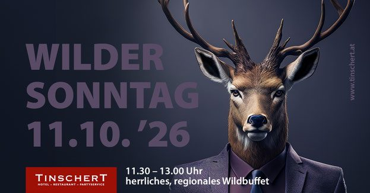
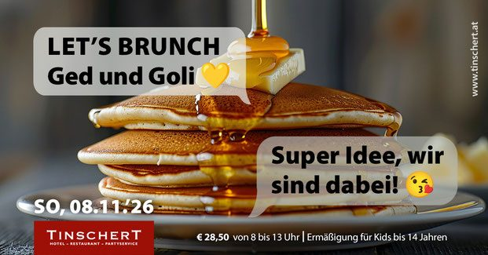
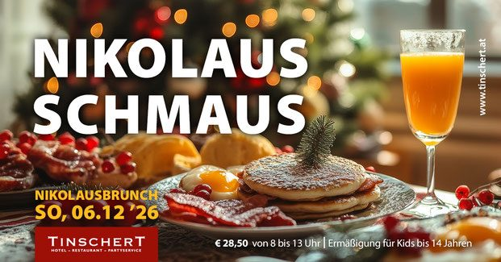

Restaurant + Extrazimmer
Der große Rahmen für Hochzeiten und Firmenfeiern, inklusive Beamer und Tonanlage im gesamten Haus.
bis 80 Personen mit Tanzfläche
Ohne Tanzfläche bis 102 Personen, insgesamt maximal 95 Sitzplätze im Bankettbetrieb.
Feiern · Seminare · Catering
Hochzeit, Geburtstag, Taufe, Firmung oder Firmenfeier: An Samstagen und Sonntagen steht Ihnen das Lokal komplett als geschlossene Veranstaltung zur Verfügung – Sie sind dann ganz unter sich. Und wenn Sie woanders feiern, kommt der Partyservice zu Ihnen.
Im Haus feiern
Restaurant und Extrazimmer wurden 2020 komplett neu gestaltet – mit Nuss- und Eichenholz, Stoffelementen, Beamer und einer Tonanlage im gesamten Haus.
Der große Rahmen für Hochzeiten und Firmenfeiern, inklusive Beamer und Tonanlage im gesamten Haus.
bis 80 Personen mit Tanzfläche
Ohne Tanzfläche bis 102 Personen, insgesamt maximal 95 Sitzplätze im Bankettbetrieb.
Der passende Raum für Taufe, Firmung oder Geburtstag im kleineren Kreis.
44 Sitzplätze
Gaststube für ca. 38 Personen, Wintergarten im Innenhof für 42 Personen, bei Schönwetter bis 44.
38 + 42 Plätze
Für Hochzeiten im Restaurant bieten wir eine eigene Hochzeitspauschale an. Wir stellen sie nach Ihren Wünschen zusammen – Menü oder Buffet, Sektempfang, Tischschmuck, Zimmer für Ihre Gäste.
Seminare
Das Ambiente im Haus Langwieser gibt Ihrem Seminar den Rahmen: ein flexibel eingerichteter Raum für bis zu 16 Personen in U-Form – Sitzordnung nach Wunsch, Zimmer und Wellness im selben Haus.
Verbrauchsmaterial: Kopien 1 bis 100 Stück € 0,20, ab 100 Stück € 0,30.
Partyservice & Catering
Was unsere Köche auf Teller und Buffets bringen, entsteht mit großer Sorgfalt, viel Liebe zum Detail und hochwertigen Zutaten – im Haus wie auswärts. Allein zwischen 2012 und 2017 hat unser Catering über 480 Hochzeiten begleitet.
Seit 2025 im Einsatz: das Retro-Mobil fürs Trinken, ausgestattet mit Kaffeemaschine und Bierkühler.
Der Wagen fürs Essen – 2025 gegen ein größeres und flexibleres Modell getauscht.
Mobiliar, Geschirr und Equipment aus unserem Lager: Polsterstühle mit Hussen, runde Tische, Barhocker, Front-Cooking-Stationen und Zelte.
Seit 2008 eigenes Geschäftsfeld – Start war die Verpflegung bei Case-Steyr-Traktoren in St. Valentin.
Sagen Sie uns Anlass, Ort, Datum und Personenzahl – wir erstellen ein Angebot mit Menü- oder Buffetvorschlag, Personal und Equipment.
Jahresplan
Der Jahresplan 2026 hat den Stand Oktober 2025, der Jahresplan 2027 den Stand August 2026. Änderungen sind möglich. Laut Jahresplan gilt: ab 60 Personen öffnen wir auf Anfrage.






Anfrage
Ein Formular für alle Veranstaltungen. Je mehr Sie uns verraten, desto konkreter fällt unser Angebot aus – inklusive Vorschlag für Raum, Menü und Zimmer für Ihre Gäste.